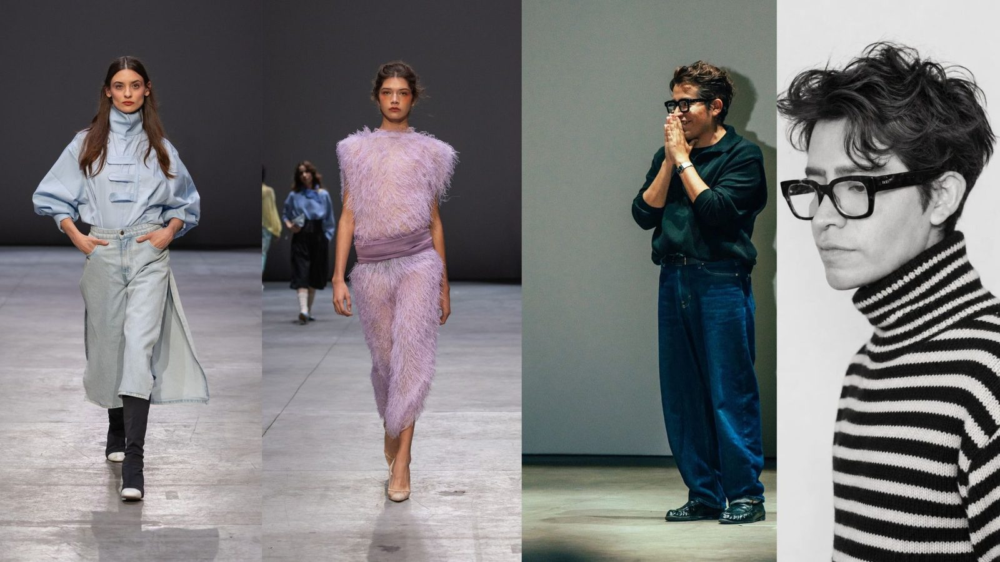
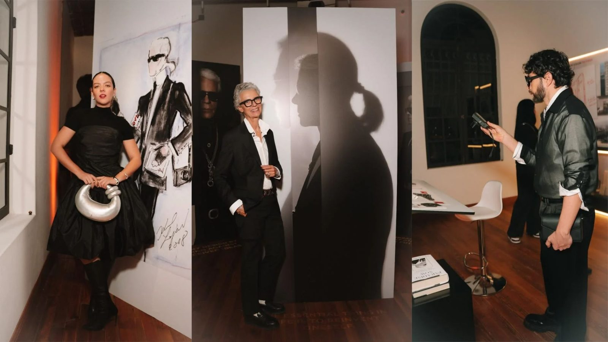

Del 12 al 17 de octubre de 2026, la Ciudad de México fue sede de la semana de la moda de México. La edición presentó 25 desfiles de diseñadores mexicanos e internacionales en dos sedes, Casa Club y Estudios Maravilla, además de conferencias y talleres. Carla Fernández abrió con PACÍFICA, una colección inspirada en el Galeón de Manila y en la conexión histórica entre México y Asia.
Fuentes: Grazia, calendario oficial · Quién, Carla Fernández
Lo que el público ve es una pasarela. Lo que se nota menos es el equipo que hace que cada look llegue hasta ahí y que después circule en fotos, notas y redes. Este artículo recorre el papel de cada uno de esos oficios.
El diseñador: la idea de origen
Todo parte de la colección. Raquel Orozco presentó FOLIA: The Art of Unleaving, con volúmenes escultóricos y hojas tridimensionales hechas con residuos textiles. Zurce, bajo la dirección de Daniel Herranz, llevó a la pasarela el universo de Alicia en el país de las maravillas en Series 10: La Hora del Té, dividida en cuatro capítulos. Cada colección define qué se quiere contar, y el resto del equipo se encarga de traducirlo en imagen.
Fuentes: Noir Magazine · Nueva Mujer
El director creativo: la visión de conjunto
El director creativo decide el tono de un proyecto. En la campaña oficial de esta edición, esa función fue de Daniel Herranz, el mismo creador que presentó Zurce en pasarela. La campaña, protagonizada por Macarena Achaga y Alejandro Speitzer, reunió además a un director de video (Arturo Gómez), un fotógrafo (Bryan Flores), una stylist (Eva Bernal) y a MAC Cosmetics en maquillaje.
Fuentes: comunicado de prensa de Fashion Week México

El stylist: la traducción al cuerpo
El stylist convierte la idea en un look: elige prendas y accesorios, los combina y los ajusta a quien los va a usar. En la campaña oficial, esa tarea fue de Eva Bernal, que también trabaja como fashion editor y directora creativa. Su perfil en Models.com la ubica en publicaciones como GQ México y Vogue Portugal, y en el editorial LatinXs, publicado en NEO2, dirigió el concepto y el styling junto al fotógrafo Jesús Soto Fuentes.
Fuentes: comunicado de prensa · Models.com, Eva Bernal · NEO2, LatinXs
El styling tiene otras caras. Roberto Coss (@robertocoss) trabaja en editorial, televisión, comercial y campañas, según su portafolio de Behance, y en 2026 fue el stylist de la cantante Flor Vigna en La Casa de los Famosos. También aparece como director de Ophelia Showroom, una agencia de relaciones de moda.
Fuentes: Behance, Roberto Coss · N+ · Publimetro
Entre los invitados de la semana, ¡HOLA! destacó a Jessica Marmolejo, stylist originaria de León, Guanajuato, que posó junto a la actriz Aislinn Derbez con un look de transparencias, colores vibrantes y texturas brillantes.
Fuentes: ¡HOLA!, los mejores looks de la semana
El fashion editor y la prensa: la lectura de la semana
El editor y los medios deciden qué se cuenta y cómo se entiende. Durante la semana, ¡HOLA!, Grazia, Noir Magazine y Nueva Mujer publicaron calendarios, looks de invitados, colecciones destacadas y resúmenes de tendencias: volúmenes escultóricos, tradición mexicana reinterpretada y nostalgia. La agenda oficial también incluyó un conversatorio de Vogue Latam con Francisco Cancino y un taller de belleza con Elle México.
Fuentes: Nueva Mujer, tendencias · PR Newswire, agenda oficial
El fotógrafo y el equipo audiovisual: la imagen que queda
La fotografía convierte el look en la imagen que circula. En la campaña, la foto fue de Bryan Flores y el video de Arturo Gómez. En la cobertura de looks de invitados de ¡HOLA!, las imágenes llevan el crédito de Aura Escobedo. Según el perfil de Eva Bernal en Models.com, ella y Flores ya habían colaborado en un editorial de GQ México en 2023, una muestra de cómo se repiten las duplas stylist–fotógrafo.
Fuentes: comunicado de prensa · ¡HOLA! · Models.com
Maquillaje y belleza: el acabado
La belleza completa el look. MAC Cosmetics estuvo a cargo del maquillaje de la campaña. La agenda incluyó un taller de belleza con Elle México y Authentic Beauty Concept, que además presentó el desfile de Raquel Orozco, mientras que Schwarzkopf presentó a 1/8 Takamura.
Fuentes: comunicado de prensa · PR Newswire, agenda oficial

Creadores de contenido y público: la segunda pasarela
La semana también se vivió en el público. ¡HOLA! documentó los looks de invitados como Carmina Rojas, estratega de marca y directora creativa; las creadoras de contenido Constanza y Paulina Magallanes y Rebeca Schürenkämper, y el artista Pedro Reyes. Nueva Mujer destacó que la edición se disfrutó tanto en las sedes como a través de las redes sociales.
En ese mismo ecosistema aparecen perfiles como Nikolina J. (@senorita_nikolina), que combina styling, creación de contenido y dos marcas propias, Aeternum Couture y Nikolina Leather. Son perfiles híbridos, cada vez más comunes, que ayudan a que los looks circulen fuera de las sedes.
Fuentes: ¡HOLA! · Nueva Mujer · Instagram de Nikolina J.
Marcas, escuelas y plataformas: el soporte
Detrás de la semana hay un entramado que la hace posible. Volvo Car México encabezó la campaña y exhibió sus modelos EX40, XC60 y EX90; Pinterest ofreció una conferencia y presentó el desfile de Zurce; Hisense aportó pantallas para mostrar las colecciones; y escuelas como el Istituto Marangoni Miami, Anáhuac Norte y Anáhuac Puebla tuvieron espacio en la agenda, dando salida a nuevo talento.
Fuentes: comunicado de prensa · PR Newswire, agenda oficial · Nueva Mujer
Un trabajo colectivo
Ninguna imagen de la semana es obra de una sola persona. El diseñador propone, el director creativo orienta, el stylist viste, el fotógrafo captura, el maquillista completa, la prensa interpreta y los creadores de contenido amplifican. Como apuntó Coolhuntermx, la moda mexicana ya no cabe solo en una pasarela, y entender quién hace qué es entender cómo funciona hoy.
Queda abierta una pregunta que ninguna cobertura responde: cómo se coordinan todos estos oficios y quién toma la decisión final sobre un look. La respuesta está en quienes lo viven desde adentro.
Fuentes: Coolhuntermx
Nota de la autora: Nikolina J. y Roberto Coss son dos de los creadores de contenido de los que me enteré de que estaban en Volvo Fashion Week México 2026. Hubo muchos más, así que su mención no pretende ser una lista completa.